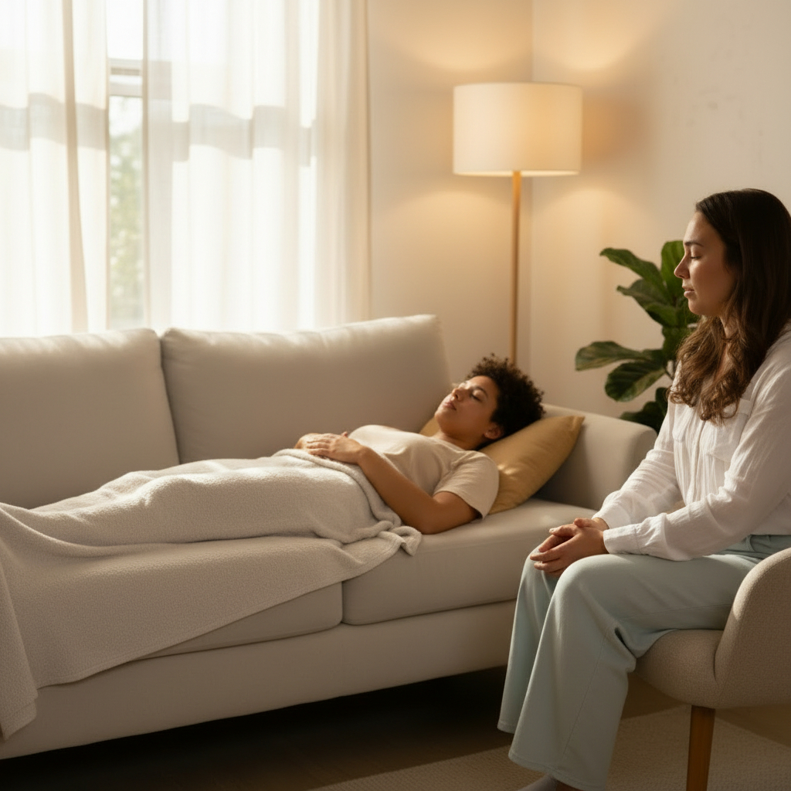

Your mind understands it, but your body stays braced.
You can explain your patterns, yet anxiety, tension, shutdown, or over-functioning keep repeating.
Somatic counselling in Vancouver and online
Maya Brstilo offers body-based counselling for adults who feel anxious, emotionally tired, disconnected, or quietly overwhelmed. This work is especially supportive when you already understand your patterns, but your nervous system still feels stuck in them.


If this feels familiar
This site is designed for people who are insightful, self-aware, and still carrying more than their body wants to hold alone.
You can explain your patterns, yet anxiety, tension, shutdown, or over-functioning keep repeating.
You might keep pushing through, people-pleasing, disconnecting, or staying productive while feeling emotionally far away from yourself.
You are looking for support that helps your nervous system soften, not just your thoughts become more organized.
How the work unfolds
Maya works from a somatic and relational lens. Sessions can include conversation, body awareness, breath, guided exploration, gentle movement, therapeutic touch where appropriate, and emotional processing.
Early sessions help you name where stress shows up physically and what your body has been doing to protect you.
The pace stays gentle so you can feel supported instead of overwhelmed by what starts surfacing.
The goal is a steadier relationship with your body, your emotions, and your needs so you can work with yourself instead of against yourself.
Ways to work together
Most popular
For adults who want one-to-one support for anxiety, stress, emotional fatigue, boundaries, life transitions, chronic pain, or relationship strain.
A group space for women wanting deeper connection with themselves, their emotions, and others through movement, breath, and somatic healing.
Online sessions make it easier to stay consistent, while Vancouver-based in-person support offers a calm physical space to settle and reconnect.
What Maya helps with
Maya’s public profile highlights stress, anxiety, and women’s issues as top specialties, with added support for over-functioning, chronic pain, life transitions, boundaries, and relationship concerns.
This work is especially helpful if you feel deeply, carry a lot, and want a steadier way to reconnect with yourself.
Clients often come in wanting more peace, emotional ease, and a way to feel grounded without abandoning their insight or their ambition.
About Maya
Registered Professional Counsellor - Provisional, MPCC-P
Maya is a CPCA member who completed a 1,725-hour Professional Counselling Diploma at Rhodes Wellness College in 2025. Her work is body-based, person-centered, trauma-focused, and shaped by a calm, relational approach.
Fellow counsellors on Psychology Today describe her presence as warm, grounded, and deeply supportive. That same steadiness shows up in the therapy room: the work is gentle, respectful, and built around helping you feel safe enough to reconnect.
Fees and logistics
$155 per session
Sliding scale may be available. Payment methods listed publicly include cash, e-Transfer, and Visa.
Book a consultationDirect billing is available for some plans, and receipts can be provided for reimbursement when needed.
Common questions
First sessions are about building safety and clarity. Maya begins by noticing how stress and tension live in your body, then works slowly through conversation, body awareness, breath, and somatic exploration so you feel supported rather than rushed.
Yes. This is one of the clearest reasons to consider somatic work. If insight alone has not shifted the way anxiety, shutdown, or over-functioning show up in your body, this approach can help make change feel more lived.
Yes. Sessions are available in person in Vancouver and online, making it easier to choose the format that helps you stay consistent.
Individual sessions are $155. A sliding scale may be available. Payments can be made by cash, e-Transfer, or Visa, and insurance support is available through direct billing for some plans or receipts for reimbursement.
Yes. Maya hosts a Women’s Somatic Healing Circle that supports women who want more connection, regulation, and resilience in community.
Next step
A free 15-minute consultation gives you space to ask questions, share what is feeling heavy, and see whether this support feels like a fit.
In person in Vancouver and online
View Maya’s Psychology Today profile